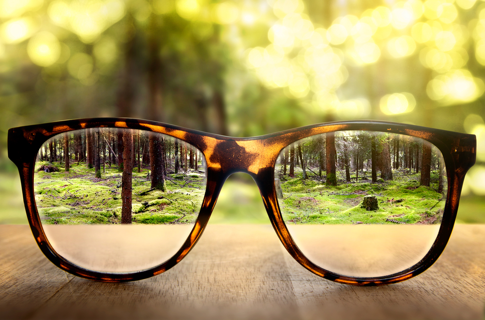
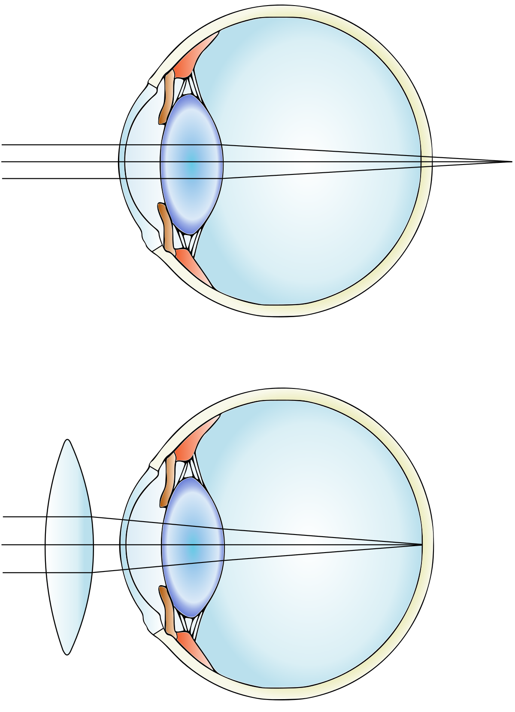
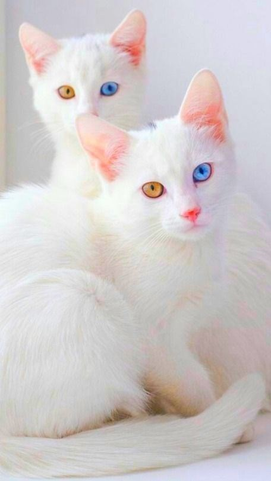
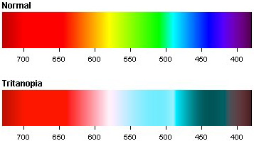
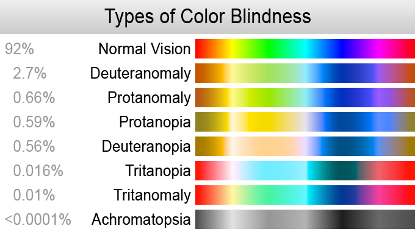

The eyes are a mirror of human health and diseases.
The method of diagnosing diseases of the iris is as old as the world - it was used by doctors in ancient Egypt and India. In the middle of the XIX century, their knowledge was multiplied by the Hungarian homeopath Ignaz Pekceli - the founder of iridodiagnostics as a science. After many years of research, he drew up the first scheme of projection zones, indicating where the iris is "displayed" each organ.
Iridodiagnostics has been actively developed, but in hospitals and clinics, an iridologist is still a rarity, because medical universities do not produce such specialists. A separate course of iridology is taught at the Kyiv Medical University of UANM. Doctors of various profiles can listen to it and get a document that allows you to practice iridodiagnostics. For example, many ophthalmologists work in Ukraine.
How to protect eye health and what to know?
To keep your eyes healthy for as long as possible, listen to simple tips:
- follow a healthy lifestyle;
- go in for sports;
- undergo regular medical examinations;
- include greens (especially spinach), cabbage, fish (a source of omega-3 fatty acids) in the diet;
- control your weight, as being overweight or obese increases the risk of diabetes or other chronic illnesses that can lead to vision loss or even blindness;
- use sunglasses to protect your eyes from the harmful effects of ultraviolet rays;
- quit smoking;
- follow the rules of personal hygiene when using contact lenses and glasses.
Important: If you sit at the computer for a long time or focus on something for a long time, periodically let your eyes rest.
We recommend the exercise "20-20-20": every 20 minutes look at a distance of 20 m for 20 seconds. This quick exercise will help reduce eye strain.
What the eyes will tell about the state of health?
1. Dry eyes. May indicate vitamin A deficiency.
2. Unexplained tearing. Is a symptom of obstruction of the lacrimal duct. This pathology is characteristic mainly of infants, but can also occur in adults.
3. A blocked tear duct prevents the natural drainage of tears. As a result, the eyes become "watery" and irritated. Injuries, tumors, and infectious lesions of the brain are among the most dangerous causes of tear duct obstruction.
4. Redness of eye proteins. Inflammation of the eyes, which is accompanied by the appearance on the proteins of a pronounced network of blood vessels, may indicate the development of an infectious disease in the body. In particular, this is how some sexually transmitted diseases manifest themselves.
5. Twitching of the eye. Is one of the manifestations of excessive stress.
6. Blurred vision. May indicate normal myopia, but also belongs to the manifestations of diabetes. This was confirmed by one study: researchers found that 73% of diabetics have complaints of blurred vision.
7. White ring around the iris. Is a sign of high cholesterol or triglycerides. If this is the case, there is an increased risk of stroke or heart attack.
8. Red streaks in the whites of the eyes. Often occur in the presence of hypertension in humans. In this disease, the increase in pressure causes damage to blood vessels, causing them to burst.
9. Dry eyes, accompanied by redness of the eyelids. Belongs to the manifestations of allergies.
10. Yellow whites of the eyes. Evidence of the presence in the body of too much substance called bilirubin. It is formed due to the breakdown of red blood cells. Accumulation of excess bilirubin is a sign of liver dysfunction. Probable causes include hepatitis, hepatosis, gallstones, cancer.
The eyes are an amazing and complex organ.
See the 16 most interesting facts about vision:
1. The human eye is able to distinguish 30-250 color tones and about 10 million mixed shades.
2. Men suffer from color blindness 10 times more often than women.
3. Women blink 2 times more often than men.
4. The viewing angle of the human eye is 160-170 degrees. For example, in pigeons the angle of view is 340 degrees, in cats - 185, in dogs and wolves - 30-40 degrees.
5. A person who works at a computer, the eyes are refocused 20 thousand times from a computer to paper or keyboard.
6. Complete adaptation of the eye to darkness takes 30-50 minutes.
7. Among most living beings, the eagle has the sharpest vision. If the visual acuity is taken as 100%, then a person will have 52%, an octopus - 32%, cats - 7%.
8. If a person had visual acuity, like an eagle, he could see from an 10-story building as an ant crawls on the ground.
9. In 1% of people on Earth, the color of the iris of the left and right eyes is different.
10. Man is the only creature that has whites of the eyes.
11. The iris of each person is unique.
12. At fast reading eyes get tired less, than at slow.
13. Cats do not distinguish red, dogs - red, orange and yellow.
14. In 12 hours a person blinks for an average of 25 minutes.
15. A person has 150 eyelashes.
16. Men cry on average 7 times a year, women - 47 times.
Myopia
Near-sightedness, also known as short-sightedness and myopia, is an eye disorder where light focuses in front of, instead of on, the retina. This causes distant objects to be blurry while close objects appear normal. Other symptoms may include headaches and eye strain. Severe near-sightedness is associated with an increased risk of retinal detachment, cataracts, and glaucoma.
The underlying cause is believed to be a combination of genetic and environmental factors. Risk factors include doing work that involves focusing on close objects, greater time spent indoors, and a family history of the condition. The underlying mechanism involves the length of the eyeball growing too long or less commonly the lens being too strong. It is a type of refractive error. Diagnosis is by eye examination.
Tentative evidence indicates that the risk of near-sightedness can be decreased by having young children spend more time outside. This may be related to natural light exposure. Near-sightedness can be corrected with eyeglasses, contact lenses, or a refractive surgery. Eyeglasses are the easiest and safest method of correction. Contact lenses can provide a wider field of vision, but are associated with a risk of infection. Refractive surgery permanently changes the shape of the cornea.
Near-sightedness is the most common eye problem and is estimated to affect 1.5 billion people (22% of the population). Rates vary significantly in different areas of the world. Rates among adults are between 15% to 49%. In China the proportion of female is significantly higher than male. Among children, it affects 1% of rural Nepalese, 4% of South Africans, 12% of people in the US, and 37% in some large Chinese cities. Rates have increased since the 1950s. Uncorrected near-sightedness is one of the most common causes of vision impairment globally along with cataracts, macular degeneration, and vitamin A deficiency.
Hypermetropia
Far-sightedness, also known as long-sightedness, hypermetropia, or hyperopia, is a condition of the eye where distant objects are seen clearly but near objects appear blurred. This blurred effect is due to incoming light being focused behind, instead of on, the retina wall due to insufficient accommodation by the lens. Small amount of hypermetropia in young patients is usually corrected by their accommodation, without any defects in vision. But, due to this accommodative effort for distant vision, people may complain asthenopic symptoms while constant reading. Some hypermetropes can see clear at distance, but near vision may be blurred due to insufficient accommodation. For this reason, this defect is referred as far-sightedness. If the hypermetropia is high, there will be defective vision for both distance and near. People may also experience accommodative dysfunction, binocular dysfunction, amblyopia, and strabismus. Newborns are almost invariably hypermetropic, but it gradually decreases as the newborn gets older.
There are many causes for this condition. It may occur when the axial length of eyeball is too short or if the lens or cornea is flatter than normal. Changes in refractive index of lens, alterations in position of the lens or absence of lens are the other main causes. Risk factors include a family history of the condition, diabetes, certain medications, and tumors around the eye. It is a type of refractive error. Diagnosis is based on an eye exam.
Lack of farsightedness correction can lead to amblyopia in children, eye fatigue syndrome, strabismus, progression of hyperopia (to a severe degree), when equally poorly visible at any distance.
Heterochromia
Heterochromia is a variation in coloration. The term is most often used to describe color differences of the iris, but can also be applied to color variation of hair or skin. Heterochromia is determined by the production, delivery, and concentration of melanin (a pigment). It may be inherited, or caused by genetic mosaicism, chimerism, disease, or injury. It occurs in humans and certain breeds of domesticated animals.
Heterochromia of the eye is called heterochromia iridum or heterochromia iridis. It can be complete or sectoral. In complete heterochromia, one iris is a different color from the other. In sectoral heterochromia, part of one iris is a different color from its remainder. In central heterochromia, there is a ring around the pupil or possibly spikes of different colors radiating from the pupil.
Though multiple causes have been posited, the scientific consensus is that a lack of genetic diversity is the primary reason behind heterochromia, at least in domestic animals. This is due to a mutation of the genes that determine melanin distribution at the 8-HTP pathway, which usually only becomes corrupted due to chromosomal homogeneity. Though common in some breeds of cats, dogs, cattle and horses, due to inbreeding.
Tritanopia – Blue-Yellow Color Blindness
Actually the wording blue-yellow color blindness is misleading. People affected by tritan color blindness confuse blue with green and yellow with violet. So the term blue-green color blindness would be more accurate because the colors blue and yellow are usually not mixed up by tritanopes.
Tritan defects affect the short-wavelength cone (S-cone). There are two different types which can be observed:
Tritanopia: People affected by tritanopia are dichromats. This means the S-cones are completely missing and only long- and medium-wavelength cones are present.
Tritanomaly: This is an alleviated form of blue-yellow color blindness, where the S-cones are present but do have some kind of mutation.
Blue-yellow color blindness can be observed only very rarely. Different studies diverge a lot in the numbers but as a rule of thumb you could say one out of 10’000 persons is affected at most. In contrary to red-green color blindness tritan defects are autosomal and encoded on chromosome 7. This means tritanopia and tritanomaly are not sex-linked traits and therefore women and men are equally affected.
Tritanopia Color Spectrum
It can be observed that tritanopes usually have fewer problems in performing everyday tasks than do those with red-green dichromacy. Maybe this is because our society associates green with good/go and red with bad/stop, a pair of colors which accompanies us every day but a clear reason isn’t found yet by the researchers.
Tritan defects can not only be inherited but also acquired during one’s lifetime. In this case it even may be reversible and not permanent like an inherited color blindness. In the case of an acquired defect this is either evolving slowly for example simply through aging or coming instantly caused by a hard hit on your head.
Color blindness (color vision deficiency)
Color blindness (color vision deficiency) is the decreased ability to see color or differences in color. It can impair tasks such as selecting ripe fruit, choosing clothing, and reading traffic lights. Color blindness may make some educational activities more difficult. However, problems are generally minor, and most color-blind people adapt. People with total color blindness (achromatopsia) may also be uncomfortable in bright environments and have decreased visual acuity.
The most common cause of color blindness is an inherited problem in the development of one or more of the three sets of the eyes' cone cells, which sense color. Among humans, males are more likely to be color blind than females, because the genes responsible for the most common forms of color blindness are on the X chromosome. Females have two X chromosomes, so a defect in one is typically compensated for by the other. Non-color-blind females can carry genes for color blindness and pass them on to their children. Males only have one X chromosome and therefore always express the genetic disorder if they have the recessive gene. Color blindness can also result from physical or chemical damage to the eye, the optic nerve, or parts of the brain. Diagnosis is typically with the Ishihara color test; other methods include genetic testing.
There is no cure for color blindness. Diagnosis may allow a person's teacher to change the teaching method to accommodate the condition. Special lenses such as X-chrome lenses may help people with red–green color blindness in bright light. Mobile apps can help people identify colors.
Red–green color blindness is the most common form, followed by blue–yellow color blindness and total color blindness. Red–green color blindness affects up to 8% of males and 0.5% of females of Northern European descent. The ability to see color also decreases in old age. In certain countries, color blindness may make people ineligible for certain jobs, such as those of aircraft pilots, train drivers, crane operators, and people in the armed forces. The effect of color blindness on artistic ability is controversial. The ability to draw appears to be unchanged, and a number of famous artists are believed to have been color blind.